SECCIÓN 5C
EMBRAGUE
Precaución: Desconecte el cable negativo de la batería antes de quitar o instalar alguna unidad eléctrica, o cuando una herramienta o equipo puede entrar fácilmente en contacto con bornes eléctricos al descubierto. La desconexión de este cable ayudará a prevenir lesiones personales y daños en el vehículo. El encendido tiene que estar también en LOCK, a menos que se indique otra cosa.
ESPECIFICACIONES
Especificaciones de apriete
Aplicación | N•m | Lbs-pie | Lbs-pulg. |
Tuercas del cilindro maestro de embrague | 22 | 16 | - |
Tornillos de retención del cilindro secundario concéntrico | 7 | - | 62 |
Tornillo de tubo de aceite de cilindro secundario concéntrico a embrague | 15 | 11 | - |
Tornillos de unión del plato opresor al volante motor | 15 | 11 | - |
HERRAMIENTAS ESPECIALES
Tabla de herramientas especiales
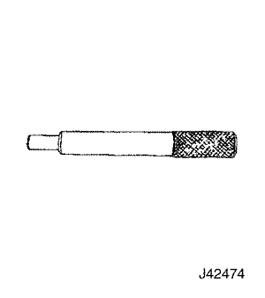
 
| J-42474 Árbol de embrague |
DIAGNÓSTICO
Funcionamiento del embrague
Operación intermitente del embrague
Comprobaciones | Medida |
Compruebe si el conductor opera el vehículo de forma inadecuada. | Corrija la operación del conductor en caso de ser necesario. |
Compruebe si el juego libre del pedal de embrague es inadecuado. | Ajuste el juego libre del pedal de embrague. |
Compruebe si hay aceite insuficiente o si hay fugas en la línea de presión de aceite. | Repare la fuga o añada aceite. |
Verifique si algún disco del embrague está deformado o desgastado. | Sustituya el disco del embrague. |
Compruebe si hay estrías desgastadas en el eje primario. | Repare o sustituya las estrías en el eje primario. |
Compruebe si el muelle de diafragma está debilitado | Sustituya el plato opresor. |
Deslizamiento del embrague
Comprobaciones | Medida |
Verifique si el cilindro concéntrico secundario está atascado. | Sustituya el cilindro secundario concéntrico. |
Verifique si el retorno de aceite del embrague es incorrecto. | Realice la purga de aire. |
Verifique si hay algún disco del embrague desgastado o existe contaminación con aceite. | Sustituya el disco del embrague. |
Compruebe si el plato opresor está deformado.. | Sustituya el plato opresor. |
Vibración del embrague
Comprobaciones | Medida |
Verifique si el volante motor está contaminado o deformado. | Repare o sustituya el volante motor. |
Compruebe si el muelle de diafragma está debilitado. | Sustituya el plato opresor. |
Verifique si hay contaminación aceitosa de un disco del embrague. | Sustituya el disco del embrague. |
Compruebe si hay estrías desgastadas en el eje primario. | Sustituya las estrías en el eje primario. |
Compruebe si el plato opresor o el volante motor están deformados. | Sustituya el plato opresor o el volante motor. |
Demasiado esfuerzo para el pedal
Comprobaciones | Medida |
Verifique si la flecha del pedal de embrague tiene mala lubricación. | Aplique grasa o repárela. |
Verifique si alguna tubería está taponada. | Inspeccione o repare la tubería atascada. |
Verifique si el cilindro concéntrico secundario está atascado. | Sustituya el cilindro secundario concéntrico. |
Ruido en el pedal de embrague
Comprobaciones | Medida |
Verifique si la lubricación del buje del pedal de embrague es insuficiente. | Lubrique el buje del pedal de embrague. |
Verifique si hay interferencia en el muelle de retorno del pedal de embrague. | Desmonte y vuelva a montar el muelle de retorno del pedal del embrague. |
LOCALIZACIÓN DE COMPONENTES
Componentes del embrague
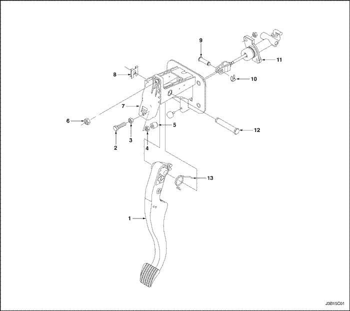
- Pedal de embrague
- Tornillo
- Tuerca
- Contratuerca
- Amortiguador del pedal de embrague
- Tuerca
- Brazo del pedal de embrague
- Anillo en "E"
- Clavija
- Anillo en "E"
- Cilindro maestro de embrague
- Flecha del pedal de embrague
- Muelle de voltereta
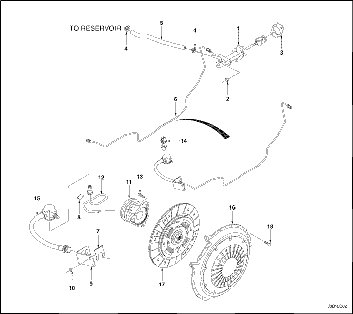
- Cilindro maestro de embrague
- Tuerca
- Junta
- Clip
- Manguera del depósito
- Tubo del cilindro maestro de embrague
- Clip
- Clip
- Soporte
- Tornillo
- Cilindro secundario concéntrico
- Tubo de cilindro secundario concéntrico
- Tornillo
- Clip
- Manguera
- Plato opresor
- Disco de embrague
- Tornillo
MANTENIMIENTO Y REPARACIÓN
servicio con vehículo en marcha
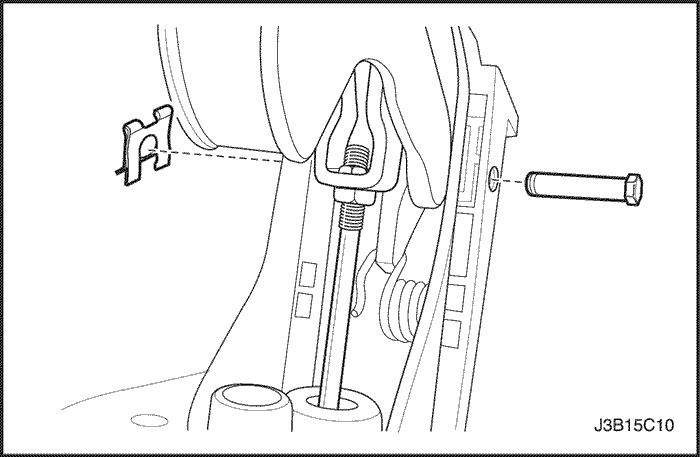
Pedal de embrague
Procedimiento de desmontaje
- Desconecte el cable negativo de la batería.
- Desmonte el muelle de retorno, del pedal de embrague.
- Retire el clip y la flecha de montaje del pedal.
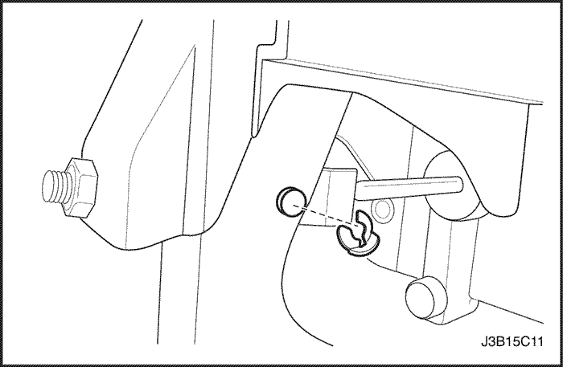
- Retire el clip de seguro y empuje el pasador de fijación de la varilla.
- Retire la varilla de empuje del pedal de embrague.
- Retire el pedal de embrague.
Procedimiento de montaje
- Instale el pedal de embrague.
- Cubra la varilla de empuje con grasa de usos múltiples.
- Instale la varilla de empuje al pedal de embrague.
- Instale el clip de seguro y el pasador de fijación de la varilla de empuje.
- Cubra la flecha de montaje del pedal con grasa de usos múltiples.
- Instale el clip y la flecha de montaje del pedal.
- Monte el muelle de retorno en el pedal de embrague.
- Ajuste el juego libre del pedal de embrague. Consulte "Ajuste del pedal de embrague" en esta sección.
- Conecte el cable negativo de la batería.
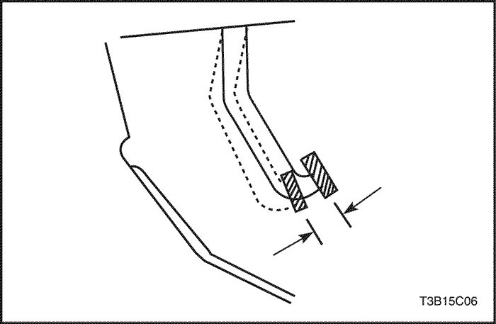
Ajuste del pedal de embrague
Procedimiento de ajuste
- Determine el juego libre del pedal de embrague. Presione ligeramente el pedal de embrague con su mano y mida la distancia cuando sienta resistencia.
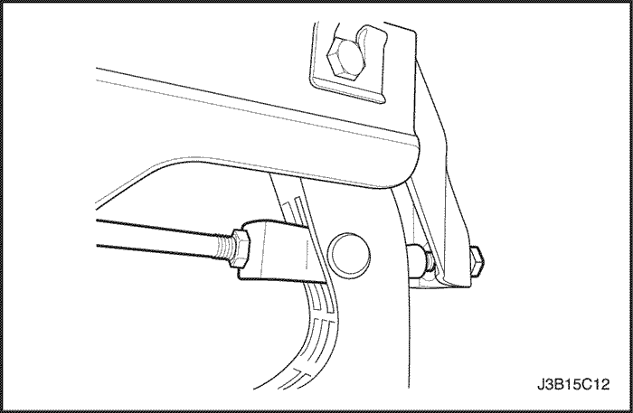
- Ajuste el juego libre del pedal de embrague. Afloje la contratuerca y gire la varilla de empuje. El juego libre del pedal de embrague debe medir de 6 a 12 mm (0,2 a 0,5 pulg.). Apriete la contratuerca después del ajuste.
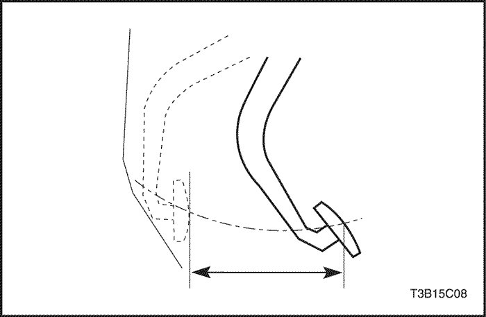
- Mida la distancia de carrera del pedal de embrague. Presione el pedal de embrague completamente hasta el piso. Mida desde el punto inicial a la posición final.
- Ajuste la carrera del pedal de embrague. Afloje la contratuerca y gire el tornillo. La carrera del pedal de embrague debe medir de 130 a 140 mm (5,1 a 5,5 pulg.). Apriete la contratuerca después del ajuste.
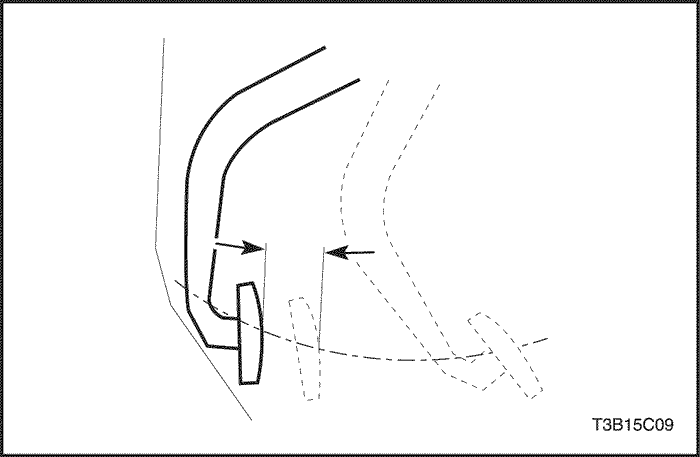
Ajuste del punto de suelta del embrague
Procedimiento de ajuste
- Aplique el freno de estacionamiento.
- Haga funcionar el motor a marcha en ralentí.
- Mientras coloca la palanca de cambios en la posición de marcha atrás, presione lentamente el pedal de embrague y mida la distancia entre el punto donde no se escucha ruido de engranes y el punto en que el pedal está totalmente presionado. La distancia debe ser de 30 a 40 mm (1,2 a 1,6 pulgadas).
- Si la distancia no está dentro del valor especificado, verifique lo siguiente:
- Altura del pedal de embrague
- Juego libre del pedal de embrague
- Aire en el sistema
- Tapa del embrague y plato opresor del disco
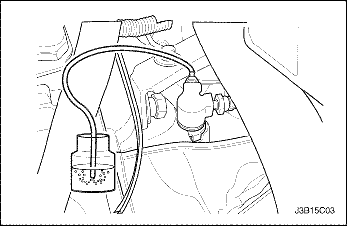
Purga de aire
Purgue el sistema hidráulico para retirar todo el aire que haya entrado cuando se desconectaron las tuberías para reparaciones. Durante la purga de aire, el aceite de embrague / líquido de frenos en sus respectivos depósitos deben mantenerse en el nivel MIN o por encima.
- Acople una manguera de vinilo al tapón de purgado. Coloque el otro extremo del tubo de vinilo en un depósito de vidrio medio lleno de líquido de frenos.
- Bombee lentamente varias veces el pedal de embrague.
- Mientras pisa el pedal del embrague, afloje el tornillo de purga hasta que empiece a salir aceite. Cierre el tornillo de purgado.
- Repita el paso 3 hasta que no haya burbujas de aire en el aceite.
- Llene el depósito con líquido de frenos hasta el nivel correcto.
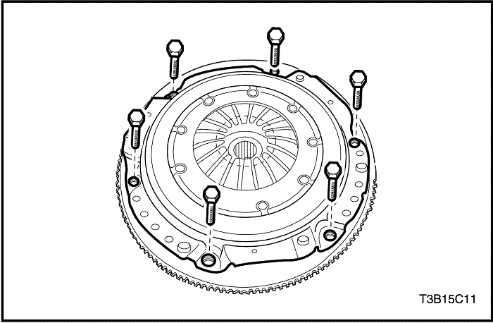
Plato opresor y disco de embrague
Procedimiento de desmontaje
- Desconecte el cable negativo de la batería.
- Desmonte la caja de cambios, del vehículo. Consulte la Sección 5B, Caja de cambios manual, de cinco velocidades.
- Desmonte los tornillos del plato opresor y el plato.
Importante: Apoye el plato opresor cuando desmonte el último tornillo.
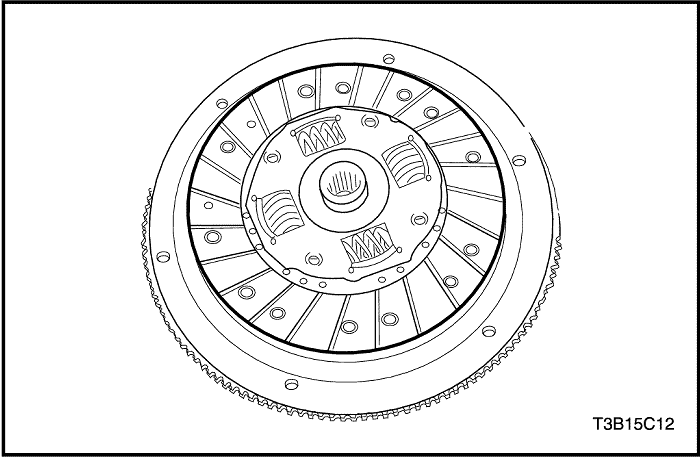
- Retire el disco de embrague del volante motor.
Procedimiento de inspección - Disco de embrague
- Inspección visual
- Inspeccione si hay desgaste o contaminación aceitosa en la superficie del embrague.
- Revise el muelle de torsión para ver si está dañado o debilitado.
- Inspeccione si uno de los discos está deformado o doblado. Después de la inspección, coloque un nuevo disco si es necesario.
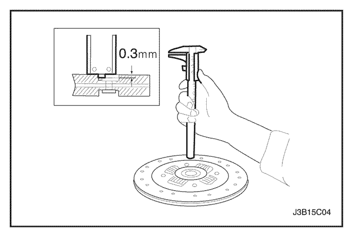
- Inspección de discos de embrague
- Mida la profundidad de la cabeza del remache desde la superficie del disco de embrague.
- Sustituya el disco de embrague si el valor medido está por debajo del límite.
- Profundidad de cabeza del remache (límite): 0,3 mm (0,012 pulg.)
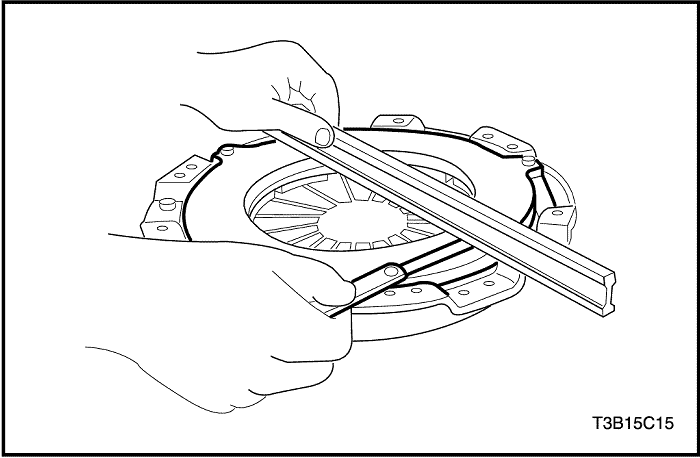
Procedimiento de inspección - Plato opresor
- Compruebe si el dedo del muelle de diafragma está desgastado.
- Compruebe si la superficie del plato opresor está desgastada o agrietada.
- Compruebe si alguna cara está contaminada con aceite. Después de la inspección, sustituya el plato opresor si es necesario.
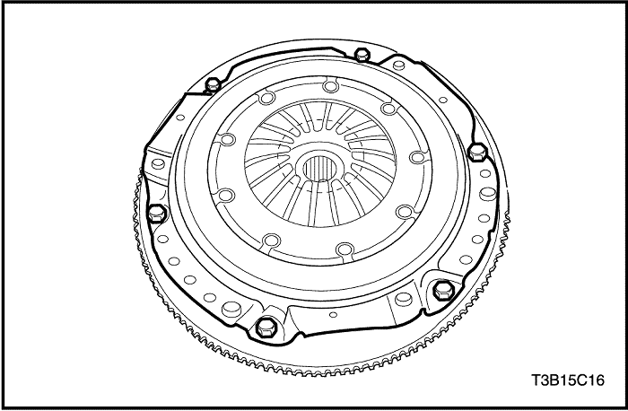
Procedimiento de montaje
- Cubra las estrías sobre el disco de embrague con grasa de usos múltiples.
- Alinee el plato opresor y el disco de embrague sobre el volante motor, usando el árbol de embrague J-42474.
- Monte los tornillos del plato opresor.
Apretar
Apriete los tornillos a 15 N•m (11 lbs-pie).
- Retire el árbol de embrague J-42474.
- Monte la caja de cambios en el vehículo. Consulte la Sección 5B, Caja de cambios manual, de cinco velocidades.
- Conecte el cable negativo de la batería.
Conjunto de cilindro maestro de embrague
Procedimiento de desmontaje
Antes de desconectar la manguera del depósito, extraiga el aceite de embrague / líquido de frenos del depósito.
- Retire el clip de seguro.
- Retire el pasador de fijación de la varilla de empuje y la varilla.
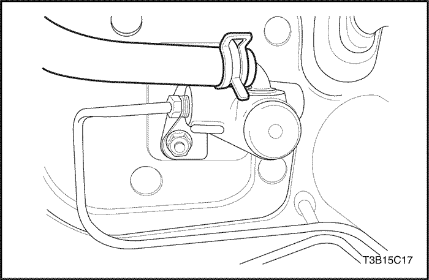
- Desconecte la abrazadera de la manguera en el cilindro maestro.
- Desconecte la manguera del cilindro maestro.
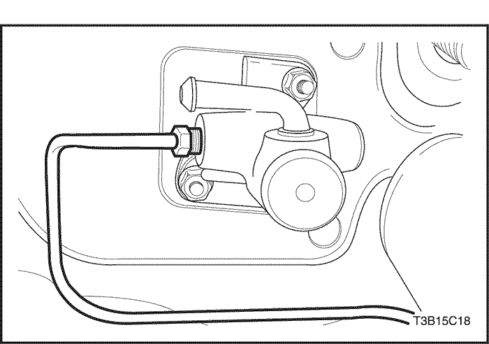
- Retire el tubo del cilindro maestro.
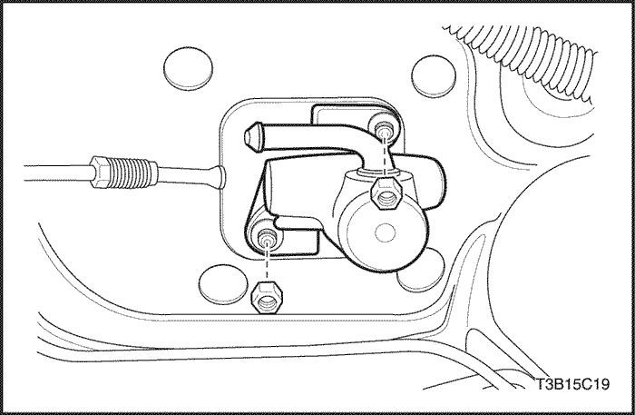
- Retire las tuercas del cilindro maestro de embrague.
- Retire el cilindro maestro de embrague.
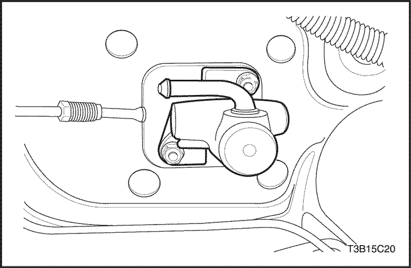
Procedimiento de montaje
- Instale el cilindro maestro de embrague y las tuercas del cilindro maestro de embrague.
Apretar
Apriete las tuercas del cilindro maestro del embrague a 22 N•m (16 lbs-pie).
- Instale el tubo del cilindro maestro.
- Conecte la manguera del cilindro maestro.
- Conecte la abrazadera de la manguera en el cilindro maestro.
- Instale el pasador de fijación de la varilla de empuje y la varilla.
- Instale el clip de seguro.
- Purgue el aire. Consulte "Purga de aire" en esta sección.
- Ajuste el pedal de embrague. Consulte "Ajuste del pedal de embrague" en esta sección.
- Llene el depósito con aceite de embrague / líquido de frenos hasta el nivel correcto.
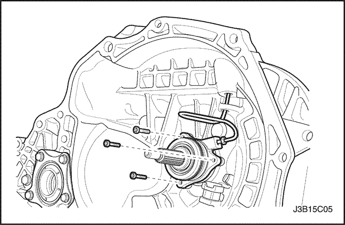
Cilindro secundario concéntrico
Procedimiento de desmontaje
- Desmonte la caja de cambios, del vehículo. Consulte la Sección 5B, Caja de cambios manual, de cinco velocidades.
- Desmonte los tornillos de retención del cilindro secundario concéntrico.
- Desconecte del cilindro, el tubo del cilindro secundario concéntrico.
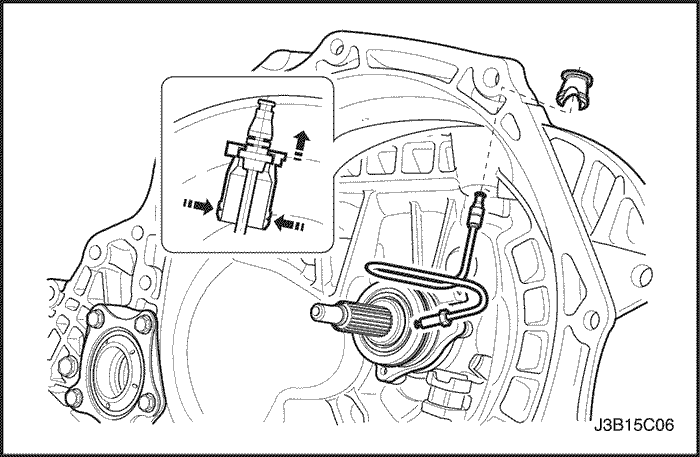
Aviso: Cuando retire el buje, asegúrese de no retirarlo con fuerza excesiva.
- Desmonte el casquillo del tubo del cilindro secundario concéntrico de la carcasa de la caja de cambios.
- Retire el tubo de cilindro secundario concéntrico.
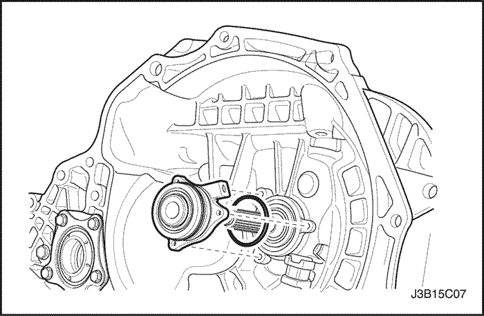
Aviso: Durante su instalación o extracción, asegúrese de no separar el muelle de fijación del retén de aceite de la parte trasera del cilindro secundario concéntrico.
- Retire la junta tórica y el cilindro secundario concéntrico.
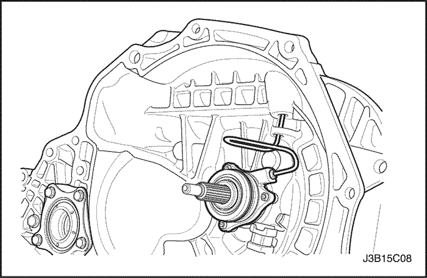
Procedimiento de montaje
- Instale el cilindro secundario concéntrico y el tubo.
- Después de montar provisionalmente el tornillo del tubo, apriete los tornillos de retención del cilindro secundario concéntrico.
Apretar
Apriete los tornillos del cilindro secundario concéntrico a 7 N•m (62 lbs-pulg.).
- Apriete el tornillo del tubo.
Apretar
Apriete el tornillo del tubo a 15 N•m (11 lbs-pie).
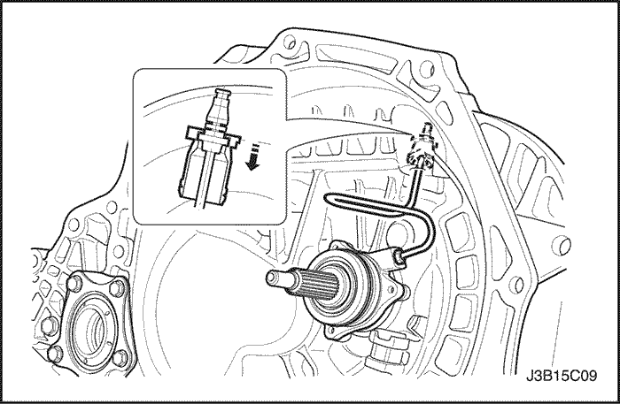
- Monte el casquillo en la carcasa de la caja de cambios.
- Conecte el tubo con el buje.
- Monte la caja de cambios en el vehículo. Consulte la Sección 5B, Caja de cambios manual, de cinco velocidades.
DESCRIPCIÓN GENERAL Y FUNCIONAMIENTO DEL SISTEMA
Piezas motrices
Las piezas motrices consisten en dos superficies planas maquinadas hasta una acabado suave. Una de ellas es la cara trasera del volante motor y la otra es el plato opresor. El plato opresor va montado dentro de una tapa de acero que está atornillada al volante motor.
Piezas conducidas
La pieza conducida es el disco del embrague con un cubo estriado. El cubo estriado está libre y puede deslizarse lateralmente a lo largo de las estrías del eje primario e impulsa el eje primario por medio de esas mismas estrías.
Los componentes conductores y conducidos se mantienen en contacto mediante la presión de los muelles. Esta presión es ejercida por un muelle de diafragma en el conjunto del plato opresor.
Piezas operativas
El sistema de liberación del embrague consiste del pedal de embrague, el cilindro maestro del embrague y el cilindro secundario concéntrico.
A diferencia del sistema anterior que liberaba el embrague mediante la palanca de desembrague y una horquilla de desembrague, el cilindro secundario concéntrico libera directamente el embrague por medio de la presión que se genera cuando se pisa el pedal de embrague.